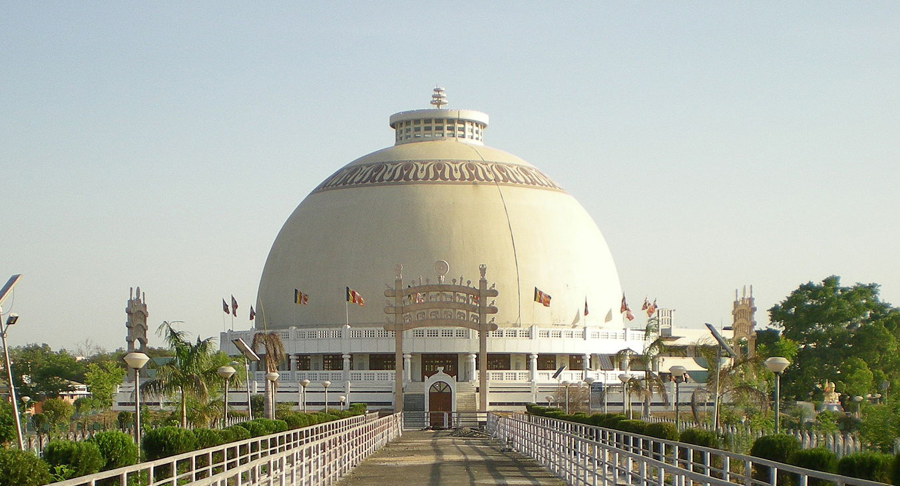
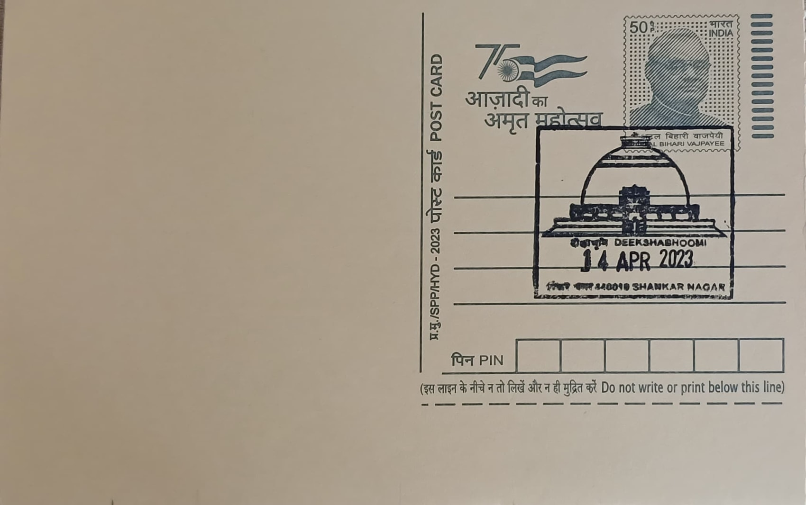
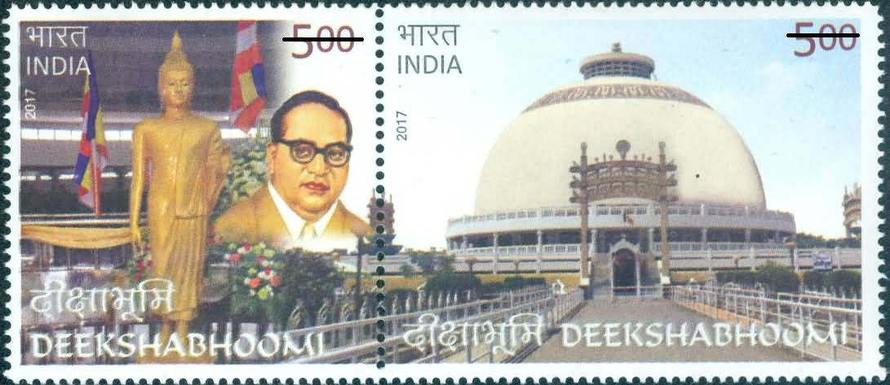

Deekshabhoomi is the site Dr. B. R. Ambedkar, father of Indian Constitution, embraced Buddhism on 14 October, 1956. After his death on 6 December 1956, Param Pooja Dr. Ambedkar Smarak Samiti, the governing body of the site, decided to build a Buddhist stupa on the premises.
Construction of the stupa began in July 1978, designed by Nagpur-based architect Sheo Dan Mal. It is also the first Asian structure to implement the method of Central Block Locking System in constructing a hollow globe-like structure. The site covers 22 acres of land, and the stupa stands at a height of 120 feet. The main structure is supported by four expanding arrangements of 16 columns at the first, 16 columns at the second, 24 at the third, and the last layer of 24 columns again. The ground floor has a space of more than 20,000 sq. feet and is meant for offering prayer. It houses the mortal remains of Dr. Ambedkar.
The stupa has four gates, similar in structuring of Sanchi Stupa, Madhya Pradesh. They are mounted with images of Dhammachakra, horses, elephants, and lions carved in Rajasthani marble. The space in between is decorated with green plantation and palm trees.
3 Bodhi trees are planted at eastern side of the stupa side by side. The saplings were brought from Anuradhapura, Sri Lanka, after placing an official request with the latter. They were taken from the same Bodhi Tree planted by Sanghamitra, daughter of the Great Emperor Ashoka, during her monkhood (253 B. C.). The Tree from which the saplings were collected was a sapling of the Bodhivriksha under which Lord Buddha became enlightened.

Deekshabhoomi, 14.04.2017
| Date of Introduction | April 14, 2023 |
|---|---|
| Address | Sub Postmaster, |
| Shankarnagar SO, | |
| Nagpur (dt.), Maharashtra - 440010. |